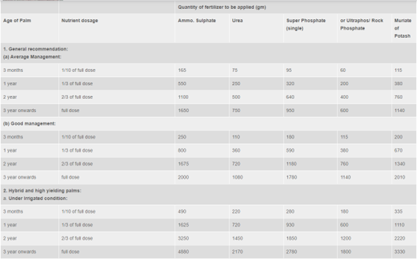

Coconut is propagated through seedlings raised from selected seednuts. Generally 9 to 12 month old seedlings are used for planting. Select seedlings, which have 6-8 leaves and 10-12 cm collar girth when they are 9-12 month old. Early splitting of leaves is another criteria in the selection of coconut seedling.
Shallow soils with underlying hard rock, low lying areas subject to water stagnation and clayey soils are to be avoided. Proper supply of moisture either through well distributed rainfall or through irrigation should be ensured before planting.
On slopes and in areas of undulating terrain, prepare the land by contour terracing or bunding. In low-lying areas mounds are to be formed at planting site to a height of at least 1m above water level. In reclaimed ‘kayal’ areas, seedlings are planted on field bunds. In loamy soils with low water table, a pit size of 1mx1mx1m is recommended. In laterite soils with underlying rocks, take larger pits of size 1.2m x 1.2m x 1.2m. In sandy soils the size need not exceed 0.75m x 0.75m x 0.75 m.
Spacing depends upon the planting system, soil type etc. In general the following spacing are recommended under different planting system in sandy and laterite soils.
| planting system | spacing |
|---|---|
| triangular | 7.6m |
| square | 7.6x7.6m, 8x8m, 9x9 m |
| single | 6.5m in rows - 9m between rows. |
| Double Hedge | 6.5 to 6.5m in rows - 9m between pairs of rows |
Seedlings can be transplanted in the beginning of the south west monsoon. If irrigation facilities are available, it is advisable to take up planting at least a month before the onset of the monsoon so that the seedlings get well established before heavy rains. Planting can also be taken up before the onset of the north-east monsoon. In low-lying areas subject to inundation during monsoon period, transplanting may be done after the cessation of the monsoon.
Before planting the pits are filled up with top soil and powdered cow dung / compost up to a depth of 50 to 60 cm. Then take a small pit inside this, so as to accommodate the nut attached to the seedling. Plant the seedling inside this pit and fill up with soil. Press the soil well so as to avoid water stagnation. If there is chance for white-ant attack apply Sevidol 8G (5gm.) inside the small pit before planting. In laterite areas apply 2 kg common salt per pit for improving the physical condition of the soil. Burying 25 to 30 coconut husks per pit in layers will be useful for moisture conservation.
The transplanted seedlings should be shaded and irrigated adequately during the summer months. Also provide staking so that winds may not uproot the young seedlings. For the first two years after planting, irrigate the seedling twice a week during the dry summer months. Shading is a must to the transplanted seedlings.
Regular manuring from the first year of planting is essential to achieve higher productivity. For coconut 20 - 50 kg organic manure should be applied per palm per year with the onset of south west monsoon, when soil moisture content is high. Different forms of organic manures like compost, farm yard manure, bone meal, fish meal, blood meal, neem cake, groundnut cake etc. could be made use for this purpose. In addition to this the following Fertilizer Schedule is recommended. The fertiliser schedule recommended for the palm at different stages is as follows:-
